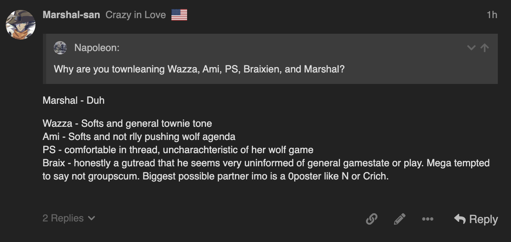

slightly villagery response because instead of eating the townread he just asks a weird question
or if they are its scumgod marshal
If it was Marshall making the post, then yeah.
Thing is it’s Braixen who picked up on it.
no quote the post of mine that had that
that shows nothing
yeah fair point
i do think braixen isn’t groupscum tho, at least
he could be neut but this feels risky
it’s angleshooty enough to make people not like him and that’s another reason why i think only a villager would do this
could be orchestrated by marshal but i find it unlikely enough that id probably only consider it lategame
It looked to be in the spur-of-the-moment, tbh.

this is what i see
the pencil is weird that it’s there but i see no edit marks
Quick edit doesn’t show stuff
But it pops up in notifications
yeah but i didn’t quick edit that post
idk then
We’re getting into pretty angleshooty territory, tbh.
1 Like
Luxy  - 0 poster
- 0 poster
katze - null, resolve later
Chloe - V (lack of fear in posting whatsoever, high conviction)
N.1 - 0 poster (also wolf AI but give it some time)
CRich - 0 poster
Marshal - null, resolve later
SirDerpsAlot - w lean (liked his start but it feels tryhardy in hindsight.)
Italy - i can’t even
Vulgard - wolf
PoisonedSquid - resolve later (if i don’t have a v read on her by the end of d2 i will call for a prince exe)
Ami - w (i think i caught her early and she just kinda dipped without addressing it. posts have felt lackluster and lukewarm and villager ami doesn’t do this)
MukuroIkusaba - v (ride or die. i’m confident i’m good at reading alice and this isn’t a misclear. entirely on me if she’s starting wolf)
Possessed - v lean (fairly solid based on attitude. i think he’s relaxed in thread and it’s a good sign. wolf possessed likes to make plays early and do stuff, which makes him feel pressured and a little more fragile. not seeing that here. could be a neutral tbh which would explain the lack of pressure)
Wazza - 0 poster (or i just don’t remember anything he said)
Napoleon - null (i feel like he’s written stuff that pinged me both ways. he’s actually posting but his posts are eh. will have to resolve day 2)
DryBones - v lean (i think his entrance string of posts was quite good and so i’m gonna call him v for now, but i want to see him keep doing this)
EVO - w (i think their behavior has been really bad, from igniting conflicts to sitting on the sidelines like a shadow)
Braixen - v (i think they are lolcleared based on that thing they did with calling out marshal’s edit)
1 Like
What is “w” or “v”
wolf and village
Wazza posted and Claimed Killer
No it’s Warrior and Villain.